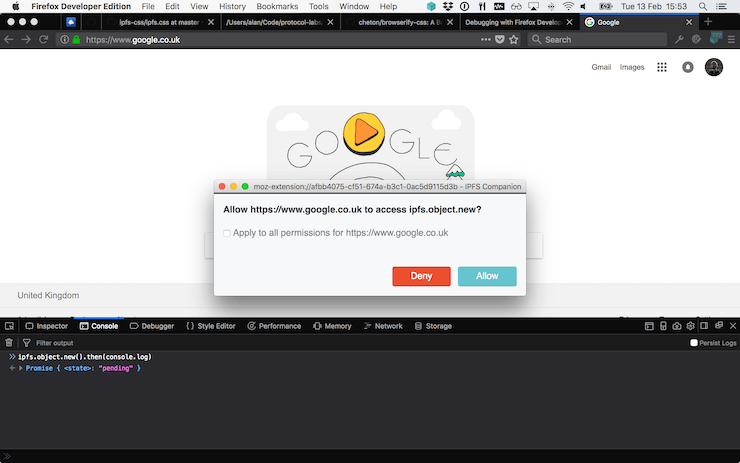
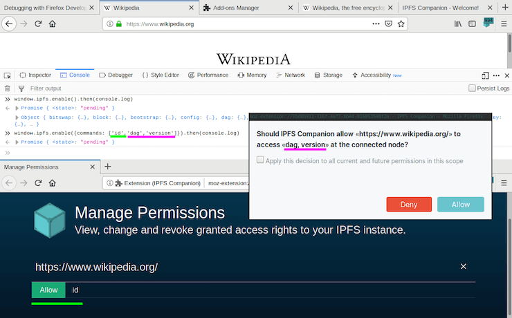

# Using window.ipfs in IPFS Companion
Learn about exposing IPFS API in IPFS Companion via "window.ipfs".
WARNING
# window.ipfs is currently disabled
IPFS Companion 2.11 stopped injecting window.ipfs. It will be restored after the move to JS API with async await and async iterables, with a likely ETA of Q3 2020. This page is provided for reference only.
# Background
IPFS Companion exposes a subset of IPFS APIs as window.ipfs on every webpage. This means websites can detect that window.ipfs already exists and use it instead of spawning their own js-ipfs node, which saves resources, battery, etc.
For more context, see:
- First iteration: window.ipfs v1
- Second iteration (currently under development): window.ipfs v2
# Creating applications using window.ipfs
If a user has installed IPFS Companion, window.ipfs will be available as soon as the first script runs on your web page, so you'll be able to detect it using a simple if statement:
if (window.ipfs && window.ipfs.enable) {
const ipfs = await window.ipfs.enable({ commands: ['id', 'dag', 'version'] })
console.log(await ipfs.id())
} else {
// Fallback
}
To add and get content, you could update the above example to do something like this:
if (window.ipfs && window.ipfs.enable) {
try {
const ipfs = await window.ipfs.enable({ commands: ['add', 'cat'] })
const [{ hash }] = await ipfs.add(Buffer.from('=^.^='))
const data = await ipfs.cat(hash)
console.log(data.toString()) // =^.^=
} catch (err) {
if (err.code === 'ERR_IPFS_PROXY_ACCESS_DENIED') {
// Proxy is present but user denied access.
// (fallback to js-ipfs or js-ipfs-http-client goes here)
} else {
// Something else went wrong (error handling)
throw err
}
}
} else {
// No IPFS Proxy
// (fallback to js-ipfs or js-ipfs-http-client goes here)
}
TIP
Use ipfs-provider to ensure your app follows any future changes of this interface. It reduces amount of code needed to implement a robust fallback to HTTP API or embedded js-ipfs when window.ipfs is not available.
# Error codes
Errors returned by IPFS proxy can be identified by the value of the code attribute.
ERR_IPFS_PROXY_ACCESS_DENIED is thrown when the current scope has no access rights to requested commands.
Optional scope and permissions attributes provide detailed information:
- If access was denied for a specific command, then the
permissionslist is present and includes names of blocked commands - If the entire IPFS proxy was disabled by the user, then the
permissionslist is missing entirely
# Q&A
# What is a window.ipfs?
It is an IPFS proxy endpoint that enables you to obtain an IPFS API instance. Depending how IPFS Companion is configured, you may be talking directly to a js-ipfs node running in Companion, a go-ipfs daemon over js-ipfs-http-client, or a js-ipfs daemon over js-ipfs-http-client ... and potentially others in the future. Note that object returned by window.ipfs.enable is not an instance of js-ipfs or js-ipfs-http-client, but is a proxy to one of them, so don't expect to be able to detect either of them or be able to use any undocumented or instance-specific functions.
For information on available functions, see the js-ipfs and js-ipfs-http-client docs for available functions. If you find that some new functions are missing, the proxy might be out of date. Please check the current status and submit a PR.
# How do I fall back if window.ipfs is not available?
See the example code (and live demo) for getting an IPFS instance with a fallback.
Tip: Use the window.ipfs-fallback library, which takes care of the fallback ceremony. It will ensure your app follows API changes and does not break in the future.
# What about IPFS node configuration?
Right now, access to the config command is blocked, and you can't make any assumptions about how the node is configured. For example, the user may not have enabled experimental features like PubSub.
Spawn a dedicated js-ipfs instance if you need non-standard configuration or any experimental features.
# Is there a permission control (ACL)?
Yes. IPFS Companion users are able to selectively control access to proxied commands, so calls may reject (or callback) with an error if a user decides to deny access. The first time you call a proxied function, the user will be prompted to allow or deny the call, and the decision will be remembered for subsequent calls. Here's what it looks like:

# Do I need to confirm every API call?
Command access needs to be confirmed only once per scope. If you provide a list of commands when requesting an API instance via window.ipfs.enable({commands}), then a single permission dialog will be displayed to the user:

For everything else, only the first call requires a decision from the user. You will be able to call previously whitelisted IPFS commands and users will not be prompted to allow/deny access the second time.
Note that users can modify their permission decisions after the fact, so you should not expect to always be allowed to call a command if it was successfully called previously.
# Can I disable this?
Users can permanently deny access to all IPFS commands by disabling the window.ipfs experiment IPFS Companion's preferences.
# How are permissions scoped?
Permissions are scoped to the origin and path (and sub-paths) of the file from which the permission was requested.
Scoped permissions in window.ipfs work similarly to how they work for service worker registrations, except that the user cannot control the scope, and it is set to the origin and path from which the permission was requested.
Scope-based permissions allow applications running on an IPFS gateway to be granted different permissions. Consider the following two websites running on the ipfs.io gateway:
With same-origin policy, these two applications would be granted the same permissions. With scoped permissions, these applications will be given a different set of permissions. For example:
- Allow
files.addtohttps://domain.com/- ...will allow
files.addto:https://domain.com/filehttps://domain.com/file2.htmlhttps://domain.com/sub/pathshttps://domain.com/sub/paths/files- etc.
- ...will allow
- Allow
files.addtohttps://domain.com/feature- ...will allow
files.addto:https://domain.com/feature/filehttps://domain.com/feature/file2.htmlhttps://domain.com/feature/sub/pathshttps://domain.com/feature/sub/paths/fileshttps://domain.com/featuresearch/sub/paths/files(note substring)https://domain.com/features.html(note substring)- etc.
- ...will cause additional prompt for
files.addto:https://domain.com/https://domain.com/files- etc.
- ...will allow
# Are Mutable File System (MFS) files sandboxed to a directory?
Yes. To avoid conflicts, each app gets its own MFS directory where it can store files. When using MFS commands (more info), this directory will be automatically added to paths you pass. Your app's MFS directory is based on the origin and path where your application is running. For example:
files.writeto/myfile.txtonhttps://domain.com/- writes to
/dapps/https/domain.com/myfile.txt
- writes to
files.writeto/path/to/myfile.txtonhttps://domain.com/feature- writes to
/dapps/https/domain.com/feature/path/to/myfile.txt
- writes to
files.readfrom/feature/path/to/myfile.txtonhttps://domain.com/- reads from
/dapps/https/domain.com/feature/path/to/myfile.txt
- reads from
files.statto/onhttps://domain.com/feature- stats
/dapps/https/domain.com/feature
- stats
files.readfrom/../myfile.txtonhttps://domain.com/feature- reads from
/dapps/https/domain.com/feature/myfile.txt(no traverse above your app's root)
- reads from